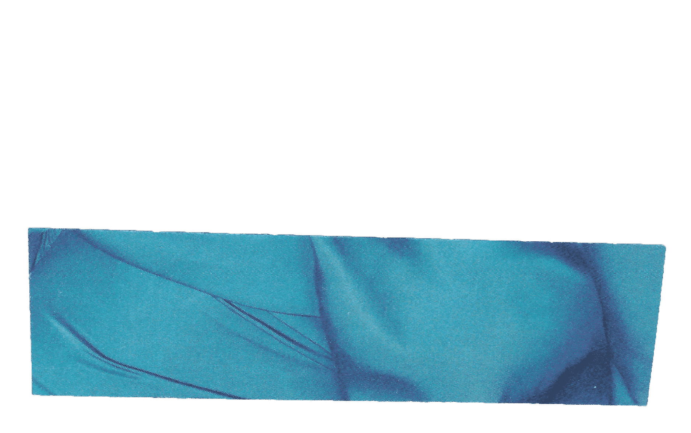
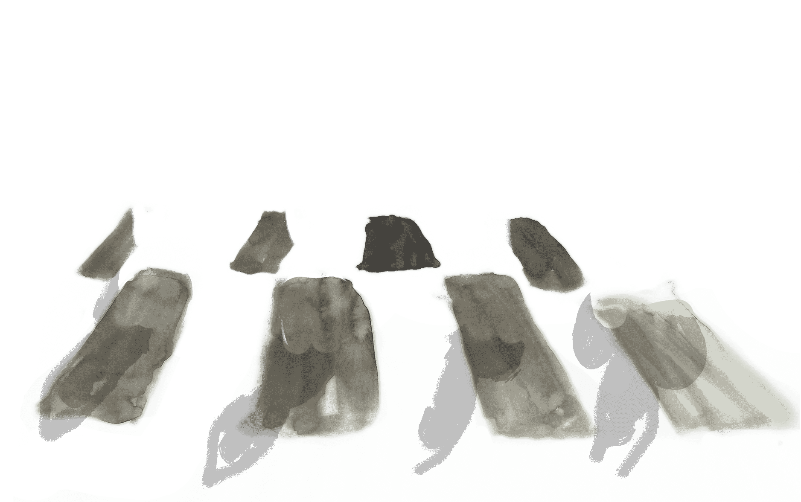
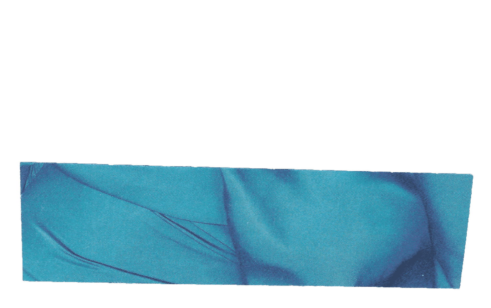
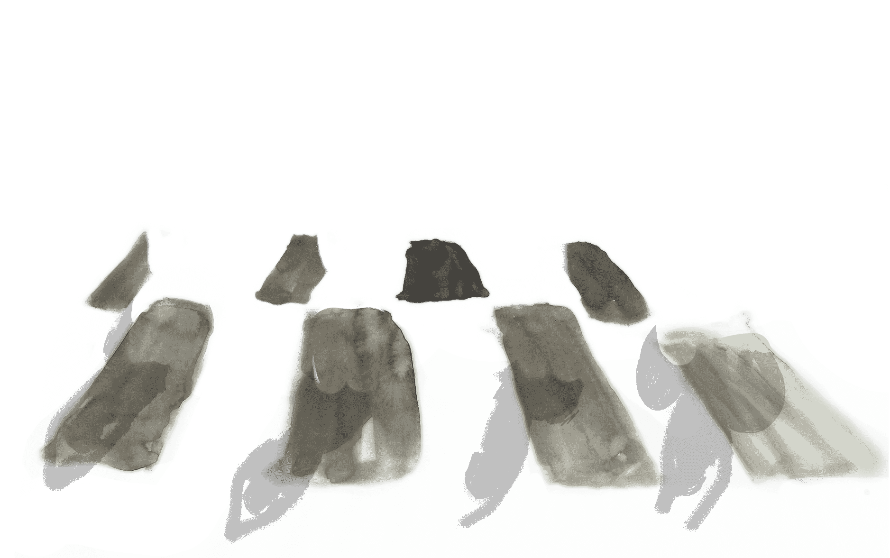

‘So, here, at last! Cracking day for it. Sorry I’m late. I got halfway here, then had to go back for my wallet. I swear, some days I’d forget my chair if I wasn’t in it. Still, good to get a bit of a puff on, and give the old arms a work-out. Forgetting things can be a pretty good way to Get Out and Get Active, I guess. Anyway, how are you guys buzzing along? Had a good couple of weeks while I’ve been away?’
Alison, the younger of the two friends, and the only one of the gathering not in a wheelchair, smiles openly, before replying. “Well, yep, you could say all’s well with the GOGA Gang. I’m still loving the archery over at the Visually Impaired Club. Good tip off, that one Lincoln. Eh, I’m getting right good now, you know. Watch out world, I’m telling you.’
Lincoln grins and shakes his head, almost in disbelief. ‘Blimey, someone’s changed their tune, I see. I definitely don’t want to repeat what you said last time I mentioned visually impaired archery to you.’
‘Yeah, but that was before I found out I’d be using the proper gear. Seriously, I thought they were going to give us those daft plastic things we had when we were kids. The real ones are proper Robin Hood. I love it.’
‘Well, Alison, pleasure is a huge part of what we do. The more fun we have while we’re active, the more likely we are to keep doing the things we enjoy. I always reckon it’s important that exercise makes us feel the best we can imagine. We can alter how much we do to maximise our pleasure, too. That definitely works for me down at the athletics track.’
‘Makes sense to me, too, Links, and you’ve definitely helped me to have plenty of fun with my bow and arrow! I needed something that makes me feel good. I’m off to the range a couple of times a week now, instead of once a fortnight. Anyway, guess what else we’ve been doing?’
‘Go on, surprise me.’
‘Well, while you were sunning yourself and enjoying all that sangria, you weren’t the only one feeling the heat, was he V?’
Less immediately forthcoming, Velma’s response is considered, each word carefully weighed, as she props herself up on her arms, and shifts her position in her more conventional and cumbersome wheelchair. ‘Definitely not. It was hot yoga for us last week and it certainly lived up to the name, anyway. I have to say, it was so nice to escape for a while and forget the world, relaxing, in its way, and it seemed to help with the pain I get. I’m not sure I was any good, but I wasn’t bad enough to be evicted for bringing hot yoga and the human form into disrepute, was I Alison?’
 



‘V. You were brilliant. The first time Lincoln took me to hot yoga, I thought they were going to have to send me home in my water bottle. Remember that, Links? I was a nightmare.’
‘Er, yes, you were a bit warm, as I recall, Ali. Then again, so was I, and I guess getting warm is the general idea, along with being good to yourself.’ Lincoln’s voice lowers. He leans forward again, this time lending gravity and intensity to his words. ‘But, look, the most important thing is that you didn’t give up. You came back and gave it another try, and then another, and another. That’s what you have to do and that’s why we can think about how much you’ve achieved through GOGA already, how much we’ve all achieved. Now you’re helping to inspire Velma, encouraging her, celebrating her achievements, setting targets with her, building trust. That’s fantastic and exactly what GOGA should be about. We can all help each other, inspire each other, and learn from each other. When you’re trying to do things on your own, it’s so much more difficult. You can be battling against loneliness, isolation, a world that looks at you like you’re from another planet, and authorities that would rather you just disappeared.’
‘Bang on, V. Well said, girl.’ Alison taps the table in appreciation of her friend’s words. ‘Whoops, sorry about that, people. I didn’t just spill our drinks, did I? Sos, if I did. I’m always doing that.’
‘No, Ali, not a drop, honestly.’ Lincoln’s reassurance is less convincing than originally intended. ‘Now, where were we? Yes, independence, and being part of the world around us. Actually, that’s one of the reasons why I feel so strongly about GOGA and about Peer support, or Peer Mentorship, if you like. It genuinely does make a difference. Once you’re part of GOGA you’re into something that changes people’s lives for the better. You could even say that it helps to make the difference between existence, and having genuine quality of life, a life that means something.’ Lincoln pauses for a gulp of his drink, before continuing.

‘There was a time, about two years after I left the spinal unit, when it all looked hopeless. Whether it was compassion fatigue, or just the way a lot of my old friends drifted off into their own lives, I don’t know, but, for whatever reason, there didn’t seem to be anybody around. Things hit me all at once. I was even doubting whether it was worth being alive. So, I know how dark and lonely it can get. Now, all of that feels like another life-time ago. I don’t know about you guys, but I can’t imagine not being part of GOGA now.
‘Yep, that’s the beauty of it.’ Alison’s response is almost automatic. ‘You’ve defo done wonders for us already, anyway Links. No more of those bloomin’ horrible pizzas and slobbing about at home for me now, honest. I’m a new woman. I’m even cooking and everything, and I haven’t poisoned anyone yet.’
‘Not that you know of, Alison, anyway.’ Velma laughs at her own joke.
‘True, V. I guess there could be plenty of unreported victims out there somewhere. We’ll blame that recipe book of Lincoln’s, if the police come knocking.’
‘The thing is, Alison, having the confidence to cook is progress too. It’s so inspiring to come back from my jollies and find such wonderful things happening. And that applies to you, as well, Velma, especially now that we’ve made a start, eh? I can’t tell you how much it means that you guys made it to the hot yoga class. It takes some guts to do that, especially in the case of our first-timer. I’m seriously impressed, Velma.’
‘Thank you.’ Velma lifts her own cup at the same time as Alison, relishing the gentle warm boost. ‘I have to say, it does help to have company and a bit of emotional support. I’d never have the confidence on my own, I don’t think, or I wouldn’t yet, shall we say?’
‘But a few months ago, you wouldn’t have gone out at all, V. All we did when I came round was watch dvds and order takeaways, and it wasn’t all that long ago. Now, look at you. It’s amazing.’ Alison reaches out and gives her friend a hug, stretching across the slight gap. Velma helps to guide Alison closer towards her, before Alison settles back into her seat.
‘Yes, it’s so easy to get stuck in those negative routines, and drift through life, without making any plans to get out and exercise. Thankfully, Velma, you’re breaking out of that now. That doesn’t mean you’re a different person, but we could say that you’re a better version of yourself. For starters, you’re being good to yourself now, showing yourself a bit of compassion, right?’ Even as he speaks, Lincoln feels his words lifting, giving energy to his question.
‘Well, yes, I think so, Lincoln, or I hope so. I mean, I am trying. I already feel better than I did a few weeks ago and that’s encouraging. I even think my clothes may be a little looser already, and even if they aren’t, I can feel a bit of self-confidence returning. It’s a long time since I felt like that.’
‘Well it’s still only eighteen months since you left hospital, Velma. Sometimes it takes time to readjust. It’s never easy. Strewth, like I told you before, I was a mess after my accident, a total mess. It was only when I got a warning from the doctor, telling me that I was borderline diabetic, that I made up my mind to do something about it.’ Lincoln pauses, and gathers his thoughts. ‘It didn’t start with organised sport for me, though. I started in my big old clunky wheelchair and got into the habit of pushing myself everywhere, rather than driving or getting the bus. It was just a “me” thing at first, but then I got involved with Disability Advice Service Bradford, Disability Rights UK, GOGA, and Bradford Disability Sport and Leisure.’
‘An upward spiral rather, than a downward one, Links?’
‘Precisely, Alison. That’s how the mentorship side of things started. That was what gave me the biggest boost, making a difference to others and helping people to avoid making the same mistakes as me. The point is that we can all learn from each other’s experiences. That’s how it works.’
‘Thank you.’ Velma lifts her own cup at the same time as Alison, relishing the gentle warm boost. ‘I have to say, it does help to have company and a bit of emotional support. I’d never have the confidence on my own, I don’t think, or I wouldn’t yet, shall we say?’
‘But a few months ago, you wouldn’t have gone out at all, V. All we did when I came round was watch dvds and order takeaways, and it wasn’t all that long ago. Now, look at you. It’s amazing.’ Alison reaches out and gives her friend a hug, stretching across the slight gap. Velma helps to guide Alison closer towards her, before Alison settles back into her seat.
‘Yes, it’s so easy to get stuck in those negative routines, and drift through life, without making any plans to get out and exercise. Thankfully, Velma, you’re breaking out of that now. That doesn’t mean you’re a different person, but we could say that you’re a better version of yourself. For starters, you’re being good to yourself now, showing yourself a bit of compassion, right?’ Even as he speaks, Lincoln feels his words lifting, giving energy to his question.
‘Well, yes, I think so, Lincoln, or I hope so. I mean, I am trying. I already feel better than I did a few weeks ago and that’s encouraging. I even think my clothes may be a little looser already, and even if they aren’t, I can feel a bit of self-confidence returning. It’s a long time since I felt like that.’
‘Sounds fine to me, Links, and, you know what?’
‘Go on, Alison.’
‘While you were away, me and Velma got talking, and V reckons she’d like to get in on the whole mentorship thing, too. How d’ya like them apples?’
‘Wow. Fantastic. That’s what I like to hear. That true, Velma?’
‘Yes. Yes, it is. The more I’ve been going through it all in my mind, the more I think it could be what I need to bring me out of myself a little, and to meet new people. It should also help me to get fitter, in every way, through helping others, especially with the support I’ll be receiving from yourself and Alison. I know, I’ve got so far to go before I even get close to what you two have achieved, but we all have to start somewhere, don’t we?’
‘Absolutely, Velma. These things are gradual, normally. It is all achievable though. If that’s what you want, between us all, we will get you there, right?’ Lincoln’s words are warm, rich with reassurance. Alison and Velma both smile, but it is Alison who takes the lead.
‘This calls for a fist-bump right?’
‘Not just any fist-bump, Alison, ‘Velma adds, ‘a Team GOGA fist-bump!’
The three friends find a mutual point at the centre of the table. Their fists make contact. The words ‘Team GOGA!’ erupt from each of them, simultaneously. Those eating and drinking at the neighbouring tables stop what they’re doing and glance across at the three friends. Velma, Alison and Lincoln sense the difference and laugh.
‘Right, it’s time we were off to the pool, I think, don’t you?’ Velma seems almost surprised at her own confidence. ‘Whoops, did I just say that?’
‘I think you must have done, V. Looks like we’ve created a monster!’ Again, Alison’s uninhibited joy proves infectious, with both Velma and Lincoln unable to avoid laughing at least as loud as their friend. ‘ Oh, before I forget, V, can I hold on to your chair, once we’re past the park gate? I’ll be fine until we reach the gate. It just gets a bit tricky when we hit the traffic.’
‘Absolutely, Ali. Not a problem at all.’
The three friends gather their things, Lincoln, in particular, double-checking to make sure that, this time, his wallet is exactly where it should be. ‘All present and correct, this time. Okay, my fellow GOGAteers, aqua-aerobics, here we come!’